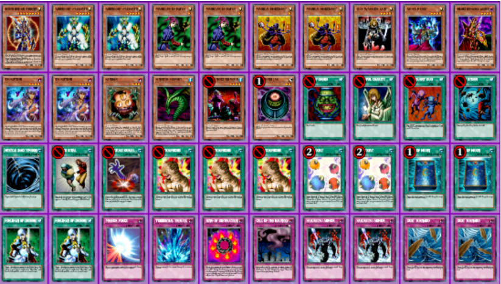
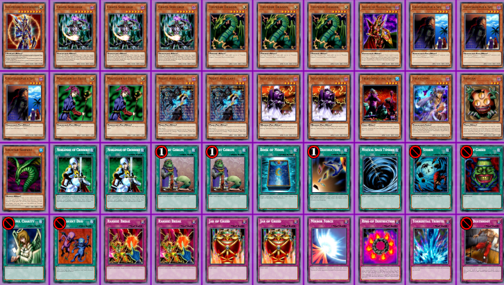
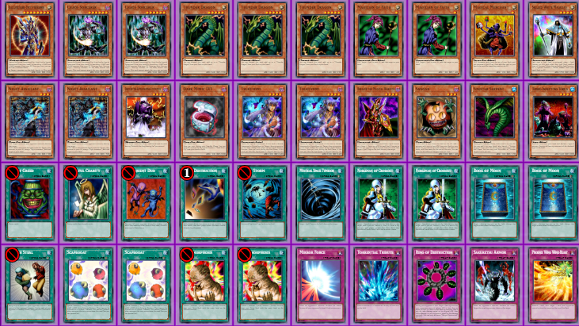

Goat Format
Il goat format è il primo dei retro formati nati dalla
comunità di Yu-Gi-Oh! e non è quindi supportato dalla azienda
produttrice de gioco stesso, ma è reso vivo da una
larga e attiva comunità di giocatori.
Cos'è il Goat format?
 Con "Goat format" ci si riferisce al formato ufficiale di
Yu-Gi-Oh! giocato nel 2005 ed è così chiamato per la
popolarità in quel periodo della carta Capro-Espiatorio,
in inglese appunto Scapegoat.
Il mazzo più utilizzato ai tempi era infatti Goat Control
famoso per giocare in combinazione le carte Metamorfosi e
Capro-Espiatorio. Altri mazzi molto popolari
ed iconici del formato sono Chaos Turbo e Chaos Control.
Le carte giocabili e la banned list in questo formato sono
quelle che furono giocate nei tornei SJC Seattle, SJC Indianapolis
e al Nazionale US che comprendono circa 1600 carte (rispetto
alle più di 10000 del formato advanced).
Con "Goat format" ci si riferisce al formato ufficiale di
Yu-Gi-Oh! giocato nel 2005 ed è così chiamato per la
popolarità in quel periodo della carta Capro-Espiatorio,
in inglese appunto Scapegoat.
Il mazzo più utilizzato ai tempi era infatti Goat Control
famoso per giocare in combinazione le carte Metamorfosi e
Capro-Espiatorio. Altri mazzi molto popolari
ed iconici del formato sono Chaos Turbo e Chaos Control.
Le carte giocabili e la banned list in questo formato sono
quelle che furono giocate nei tornei SJC Seattle, SJC Indianapolis
e al Nazionale US che comprendono circa 1600 carte (rispetto
alle più di 10000 del formato advanced).
Con questo formato si cerca quindi di ricreare un momento della
storia del gioco competitivo di Yu-Gi-Oh! in cui le strategie
principali non si basavano tanto sulla velocità e consistenza
come i mazzi moderni, ma sulla capacità di creare un vantaggio
in molti turni di gioco dove ogni scelta deve essere persa
con molta attenzione, sapendo valutare cosa potrebbe accadere
nei prossimi turni. Per avere successo nella propria strategia
bisogna inoltre riuscire a bluffare, facendo credere all'avverasrio
di avere pianificato una mossa piuttosto che un altra, per questi
motivi è detto comune che è uno dei formati che richiede più abilità
per riuscire ad ottenere risultati a livello competitivo.
Il Goat Format è giocato da una larghissima comunità internazionale
sia online sia fisicamente e, grazie alla comunità stessa, riesce
a mantenere vivo l'aspetto competitivo del gioco. Moltissimi
giocatori infatti si impegnano organizzare tornei del formato
a cui partecipano decine di giocatori.
Molti altri creano siti online dedicati dove si possono
vedere le liste più aggiornate dei mazzi, consigli, spunti
e discussioni che riguardano il gioco.
Goat Control

Chaos Turbo

Chaos Control

pagina principale